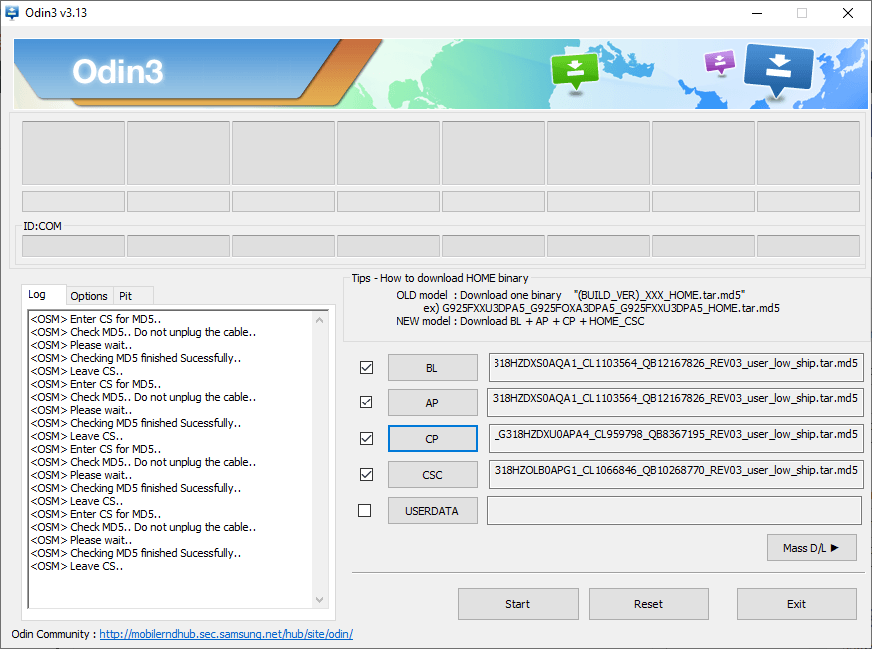

Come eseguire il root sul Samsung Galaxy Note 8

Questa guida è valida solo per il modello Exynos del Note 8, ovvero la versione SM-N950F, i consigli di questa guida non sono assolutamente applicabili su altri telefoni o su note 8 dotati di Snapdragon. Questa operazione si esegue a proprio rischio e pericolo
File per eseguire il root
Cosa fare sul pc
Abilitare le estensioni delle applicazioni (semplificherà di molto il procedimento, dato che i file sono con estensioni poco comuni e si potrebbe incorre in danneggiamenti del dispositivo)
Cosa fare sullo smartphone
Assicurarsi che il telefono abbia almeno il 60% di batteria rimanente e di avere un backup di tutti i dati presenti in esso
- Andare nelle impostazioni --> info dispositivo --> versione build (tappare 10 volte fin quando non si legge “adesso sei uno sviluppatore”)
- Andare nelle impostazioni sviluppatore ed attivare lo sblocco OEM, inserite il pin/password/segno per autorizzare i cambiamenti
- Installare i driver Samsung sul pc
- Scaricare, estrarre ed eseguire Odin con i privilegi di amministratore
- Riavviare il telefono in download mode tasto bixi + power + vol giù
- Successivamente premere il tasto volume su per entrare nella download mode
- Aprire odin e mettere il file della recovery (.tar) nella sezione AP
- Prima di cliccare il tasto start premere i tasti bixi + power + volume SU
- Tenere premuto fin quando il telefono non si riavvia in recovery
- In caso il telefono si sia riavviato e non si sia fatto in tempo ad entrare nella recovery niente panico, ri-eseguire le operazioni dallo step 5
- Una volta eseguiti i passaggi sopra descritti ci ritroviamo davanti ad una schermata blu, fate lo swipe per abilitare i cambiamenti
- Andare nella sezione "Wipe" (in alto a destra)
- Cliccare sul pannello "Format Data"
- Scrivere "yes" (senza apici)
- Una volta che l'operazione si è conclusa tornare indietro (con le gestures in basso al telefono) fino alla schermata principale
- Andare nella sezione reboot
- Cliccare su "recovery" per far si che il telefono si riavvi automaticamente in recovery
- Attaccare il telefono al pc, se esso lo riconosce spostare dentro la memoria interna i file: dm-verity and force encryption disabler; ed il file .zip di magisk, in caso la memoria interna non venga riconoscuta usare una microSD
- Andare nella sezione "install"
- Se avete messo il file nella memoria del telefono dovreste trovarlo subito, se invece avete usato la SD andata in basso su "select storage" e selezionate la MicroSD
- Una volta individuato il file dm-verity and force encryption disabler cliccare su esso
- Flashare il file (continuando lo swipe)
- Flashare Magisk
- tornare nel menù principale, andare nella sezione reboot, selezionare "system"
- Una volta che si è caricata la schermata principale per la configurazione del telefono portare a termine tale operazione senza MAI riavviare il telefono
- Una volta che il telefono è pienamente utilizzabile andare ad abilitare le impostazioni sviluppatore (come da step 1)
- verificare che lo sblocco OEM sia attivo nelle impostazioni sviluppatore
- Una volta verificato che lo slobcco OEM sia attivo si può tranquillamente riavviare il telefono
* In caso lo sblocco OEM non sia presente tra le opzioni della modalità sviluppatore collegare il telefono ad una rete internet, e dopo dovrebbe essere disponibile
Ripristinare la ROM stock del telefono
- Scaricare la ROM stock del dispsitivo (NON SCARICATE ALTRE VERSIONI, CONTROLLATE SEMPRE IL MODELLO DI SERIE CHE COMBACI PERFETTAMENTE CON QUELLO DEL TELEFONO)
- Installare i driver USB di Samsung
- Estrarre il file .zip della rom in una cartella sul desktop
- Una volta estratti i file aprire Odin 3v13.1 con i privilegi di amministratore
- Riavviare il telefono in download mode (vedi setp 5 della guida per fare il root)
- Importare il file BL (Di solito questo file inizia per BL) su odin (questa operazione potrebbe far bloccare l’applicazione per parecchi minuti, se windows rileva che l’appicazione ha smesso di funzionare non chiuderla, ma aspettare che il programma torni a rispondere)
- Importare il file AP (Di solito questo file inizia per AP) su odin (questa operazione potrebbe far bloccare l’applicazione per parecchi minuti, se windows rileva che l’appicazione ha smesso di funzionare non chiuderla, ma aspettare che il programma torni a rispondere)
- Importare il file CP (Di solito questo file inizia per CP) su odin (questa operazione potrebbe far bloccare l’applicazione per parecchi minuti, se windows rileva che l’appicazione ha smesso di funzionare non chiuderla, ma aspettare che il programma torni a rispondere)
- Importare il file CSC (Importare il file chiamato HOME_CSC) su Odin (questa operazione potrebbe far bloccare l’applicazione per parecchi minuti, se windows rileva che l’appicazione ha smesso di funzionare non chiuderla, ma aspettare che il programma torni a rispondere)
- Una volta importati tutti i file si dovrebbe avere una situazione simile a questa: 
- Cliccare su start
- Il processo impiega dai 2 ai 10 minuti per essere completato
Problemi "comuni"
Odin rimane bloccato per diverso tempo a: SET PARTITION (Abbastanza comune)
Causa:
Avete una versione di odin precedente alla 3v13.1
soluzione
Scaricare la versione all'inizio della guida
Il telefono mostra una scritta rossa sopra il logo e non si accende (poco comune)
Causa
Non avete abilitato lo sblocco OEM oppure avete riavviato prima di verificare che tale sblocco fosse abilitato
Soluzione
Installare una ROM stock del dispositvo